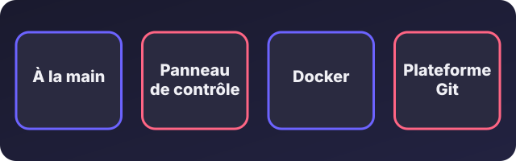
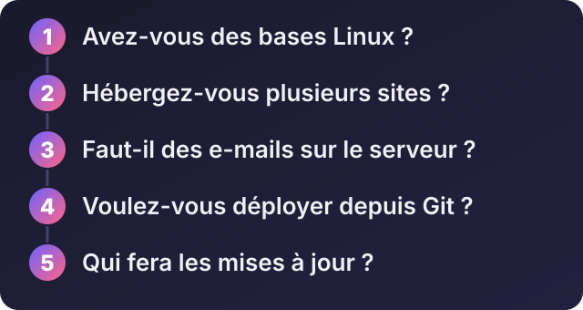

Gérer son VPS : à la main, avec un panneau de contrôle, avec Docker ou une plateforme ?

Écouter cet article · environ 5 min
Votre VPS est configuré et sécurisé. Maintenant, comment allez-vous l'utiliser au quotidien ? Installer un site, créer une base de données, ajouter une adresse e-mail, déployer une application : il existe plusieurs façons de faire, et le bon choix dépend de vous, pas du serveur.

1. À la main : la ligne de commande
Vous installez vous-même chaque élément (Nginx ou Apache, PHP, base de données, Node.js) et vous les configurez avec des fichiers. C'est l'approche des tutos précédents (Laravel, React et Node.js).
Pour : contrôle total, serveur léger (rien d'inutile), vous comprenez ce qui tourne, aucune licence.
Contre : il faut des bases de Linux, et tout est à votre charge : mises à jour, sécurité, sauvegardes.
À choisir si : vous êtes développeur ou à l'aise en ligne de commande, avec peu de projets à héberger. C'est ce que je fais sur mes propres serveurs : à la main, sans panneau.
2. Un panneau de contrôle : une interface web pour le serveur
Un panneau de contrôle ressemble à ce que vous connaissez de l'hébergement mutualisé : vous créez un site, une base de données, une adresse e-mail et un certificat HTTPS en quelques clics, sans ligne de commande.
Il existe des panneaux gratuits : HestiaCP, CloudPanel, ISPConfig, Virtualmin. Les panneaux les plus connus du grand public, cPanel et Plesk, sont payants (licence).
Pour : pratique pour héberger plusieurs sites, y compris pour des clients, avec des adresses e-mail, sans tout configurer à la main.
Contre, et c'est important :
- Le panneau consomme des ressources : il demande un VPS un peu plus costaud.
- Il agrandit la surface d'attaque : c'est un logiciel de plus, exposé sur Internet, avec un accès d'administration qui donne les clés du serveur. Des failles critiques ont déjà touché des panneaux répandus, dont CyberPanel en 2024, d'après les alertes publiées à l'époque.
- C'est à vous de le mettre à jour. Un panneau installé et jamais mis à jour devient un danger.
Les règles si vous en prenez un :
- Choisissez un projet activement maintenu, avec une page d'avis de sécurité, et regardez les failles passées et la rapidité des corrections.
- Installez-le sur un serveur neuf, en suivant la procédure officielle du projet, jamais sur un serveur qui contient déjà des données.
- Restreignez l'accès au panneau (par adresse IP si possible) et activez la double vérification.
- Mettez-le à jour régulièrement.
3. Docker : des conteneurs reproductibles
Docker fait tourner chaque application dans un « conteneur » isolé, avec tout ce dont elle a besoin. On décrit l'ensemble dans un fichier (Docker Compose), et on peut refaire la même installation sur un autre serveur.
Pour : installations reproductibles, applications isolées les unes des autres, mises à jour de versions plus simples, très répandu chez les développeurs.
Contre : une courbe d'apprentissage, et une configuration réseau et de sécurité à comprendre. Mal configuré, Docker peut ouvrir des ports sans que vous le sachiez.
À choisir si : vous avez plusieurs applications avec des versions différentes, ou vous voulez pouvoir déménager facilement.
4. Une plateforme de déploiement : Git qui déploie tout seul
Des outils comme Coolify ou CapRover transforment votre VPS en mini-plateforme : vous envoyez votre code sur GitHub, et l'application est compilée et mise en ligne automatiquement, avec le HTTPS. L'idée ressemble à ce que proposent des services comme Vercel ou Heroku, mais sur votre propre serveur.
Pour : idéal pour un développeur avec plusieurs applications à déployer souvent.
Contre : vous dépendez de l'outil, et le serveur reste de votre responsabilité.
Cinq questions pour choisir

- Avez-vous des bases en Linux ? Non : un panneau ou une plateforme facilitent, ou prenez un VPS géré.
- Hébergez-vous plusieurs sites ? Oui, surtout pour des clients : un panneau.
- Faut-il des e-mails sur le serveur ? Si oui, un panneau simplifie beaucoup. Sinon, il vaut souvent mieux utiliser un service d'e-mail spécialisé.
- Voulez-vous déployer depuis Git ? Oui : une plateforme de déploiement, ou Docker.
- Qui fera les mises à jour ? C'est la question la plus importante. Quelle que soit la méthode, quelqu'un doit s'en occuper.
Mon conseil
- Un développeur avec un à trois projets : la ligne de commande, éventuellement avec Docker.
- Plusieurs sites de clients, avec e-mails : un panneau gratuit et maintenu, bien sécurisé.
- Beaucoup d'applications déployées souvent : une plateforme comme Coolify ou CapRover.
- Aucune compétence technique : un hébergement mutualisé, ou un VPS géré par l'hébergeur ou un prestataire.
Besoin de choisir, d'installer ou de sécuriser ? Dites-moi votre projet sur WhatsApp : je vous recommande la méthode adaptée, et je peux m'occuper de la mise en place et du suivi.